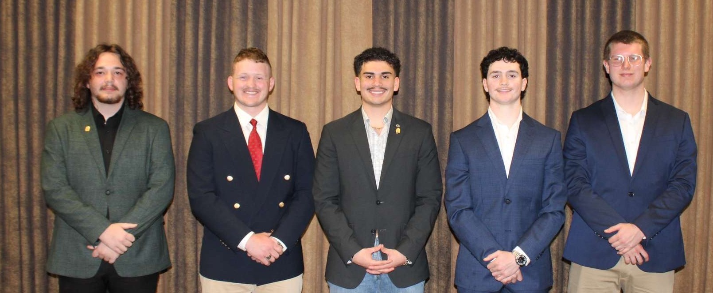

Current Executive
Committee

Donec eget ex magna. Interdum et malesuada fames ac ante ipsum primis in faucibus. Pellentesque venenatis dolor imperdiet dolor mattis sagittis magna etiam.
Donec eget ex magna. Interdum et malesuada fames ac ante ipsum primis in faucibus. Pellentesque venenatis dolor imperdiet dolor mattis sagittis magna etiam.

Donec eget ex magna. Interdum et malesuada fames ac ante ipsum primis in faucibus. Pellentesque venenatis dolor imperdiet dolor mattis sagittis magna etiam.
"My name is Dominic Mann and I'm a from Lawton, OK. I gratuated from MacArthur High School
now plan to get my degree in Journalism and Media Production in hopes of becoming a film maker
one day. Outside of academics, I participate in Speech and Debate here at Cameron, and serve as
the Grandmaster of Ceremonies fro the Phi-Gamma Chapter. I'm glad that I've been able be gifted
with so many friends here at this chapter and learn what it takes to be a leader"
- Dominic Mann
" Joining this fraternity was a blessing in disguise to say the least.
The people I have met along the way and the the learning tool I
have access to are nest to priceless. I enjoy spending time with my
guys as we network and grow as young men. All together, my time and
mission in Kappa Sigma has prepared me to achieve my goals for the future. "
- Aiden Chambers